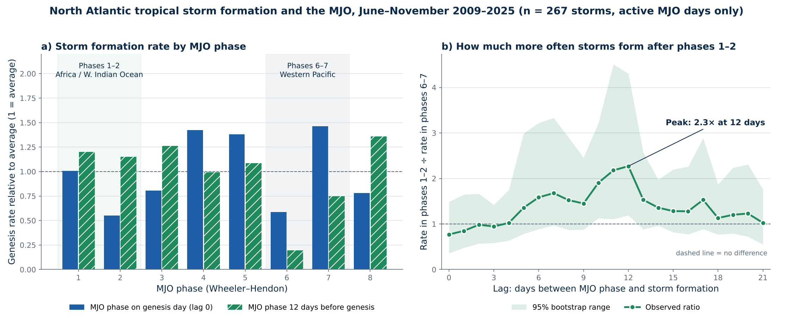
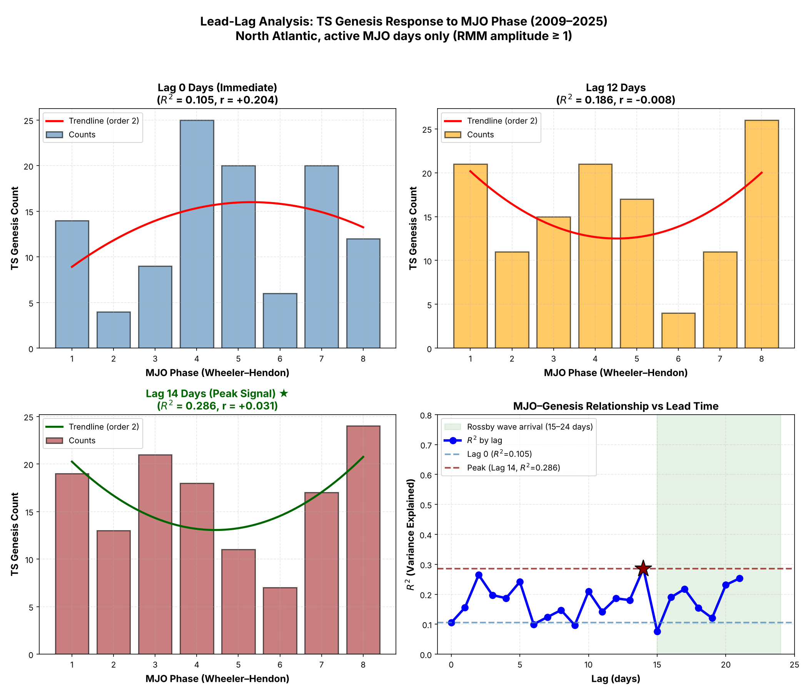

Undergraduate Research ATM 306: Climate and Climate Change· University at Albany · 2026
MJO Lead–Lag Relationship with North Atlantic Tropical Storm Formation
Does the phase of the Madden–Julian Oscillation tell us anything about how likely Atlantic tropical storms are to form one to three weeks from now?
Overview
The Madden–Julian Oscillation (MJO) is the dominant source of sub-seasonal variability in the tropics. It is an eastward-moving source of enhanced and suppressed rainfall that circles the globe every 30–60 days. As it moves, it changes winds and moisture far from where it is raining, including over the Atlantic hurricane basin. Because the MJO can be predicted weeks in advance, knowing how long its influence takes to reach the Atlantic could help extend tropical cyclone outlooks beyond the range of ordinary weather forecasts. To see the current MJO forecast visit here
Previous studies (e.g. Klotzbach 2010) found that Atlantic storm activity tends to be higher when the MJO's rainfall is over Africa and the western Indian Ocean (phases 1–2) and lower when it is over the western Pacific (phases 6–7). This project asks how that contrast changes as the gap between the MJO phase and the day a storm forms grows from 0 to 21 days.
Data
- Tropical storms: NOAA National Hurricane Center Atlantic best-track database (HURDAT2), 2009–2025.
- MJO: Daily Real-time Multivariate MJO index (RMM1 and RMM2; Wheeler & Hendon 2004).
Method
- Storm formation. For each storm (identified by its unique NHC ID), found the first time it reached tropical storm strength (≥ 34 kt) as a tropical or subtropical cyclone.
- MJO phase. Assigned each day a phase from 1–8 using the standard Wheeler–Hendon phase diagram, and kept only days with an active MJO (RMM amplitude ≥ 1).
- Lag. For each lag from 0 to 21 days, matched every storm to the MJO phase that many days before it formed.
- Formation rate. Some phases happen more often than others, so storm counts in each phase were divided by the number of active-MJO days in that phase during June–November.
- Comparison and uncertainty. Compared the formation rate after phases 1–2 with the rate after phases 6–7 at each lag, with a 95% range from a bootstrap that resamples whole hurricane seasons.
Results

- No same-day signal. Using the MJO phase on the day a storm forms, phases 1–2 show no advantage over phases 6–7 (ratio 0.8).
- The contrast builds over about 1–2 weeks. From roughly 5 days of lead time onward, storms formed more often after phases 1–2 than after phases 6–7.
- Strongest at 12 days. Storms formed about 2.3 times as often when the MJO had been in phases 1–2 twelve days earlier as when it had been in phases 6–7 (95% range 1.2–4.3). Panel (a) shows most of this comes from phase 6, which was followed by very few storms.
- Fades by three weeks. By a 21-day lag, the two groups are about equal again.
Why it matters
The direction of the signal matches previous research, and the delay adds something useful for forecasting: the MJO phase observed today relates more closely to Atlantic storm formation 1–2 weeks later than to storms forming right now. A one- to two-week heads-up on more or less favorable periods is the kind of lead time that helps emergency managers and forecasters plan staffing, messaging and preparedness during hurricane season.
How this analysis changed
The first version of this project, for an undergraduate course, used raw storm counts by phase and found an apparent peak about 18–21 days after the MJO signal. Revisiting the code turned up three issues: storms were grouped by name (Atlantic names repeat every six years, so different storms were merged), phases were numbered differently from the standard Wheeler–Hendon convention, and weak-MJO days were included. After fixing these, raw counts no longer showed a clear peak, which led to the rate-based comparison above.

Limitations & next steps
- Seventeen seasons leave only about 2–25 storms in each phase at a given lag, and 22 lags were tested, so the result should be treated as exploratory. A longer record (for example, the MJO index back to 1974) would test whether it holds up.
- Separate the effect of the MJO from other influences, especially El Niño–Southern Oscillation (ENSO).
- Look at where storms form at each lag, and at the conditions in between, such as vertical wind shear and mid-level moisture over the Atlantic.